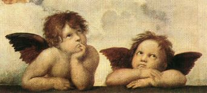
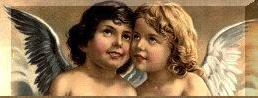
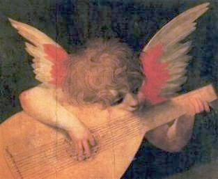
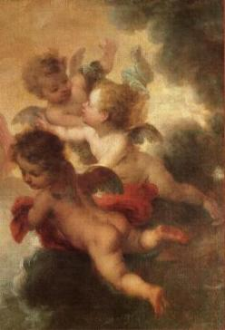
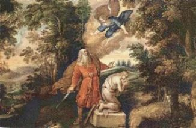
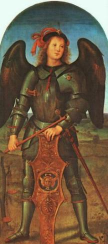
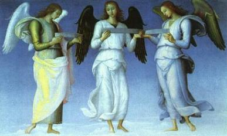
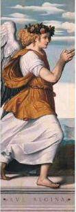

Com o objetivo de tornar os Anjos mais conhecidos, São Tomás de Aquino em sua Suma Teológica, desenvolveu um estudo realçando as Características e Prerrogativas Angélicas, considerando-as sob três luzes: Luz Branca, Luz Vermelha e Luz Azul.
LUZ BRANCA: (Luz do Conhecimento)
A primeira e poderosa manifestação Angélica é o "Conhecimento". No livro do Apocalipse encontramos a seguinte citação:
"À frente do trono, havia como que um mar vítreo, semelhante ao cristal. No meio do trono e ao seu redor estavam quatros Seres vivos, cheios de olhos pela frente e por trás... Os quatro Seres vivos tem cada um seis asas e são cheios de olhos ao redor e por dentro...” (Ap 4,6.8).
Os seus muitos olhos, permite aos Anjos da Luz Branca (Seres vivos) olharem para diante do trono e para Aquele que nele se encontra; olharem para trás, milhões e milhões de anos, desde a origem de sua existência; olharem para dentro si, de seu próprio ser, e olharem para fora, para toda a criação.

Cheios de olhos significa "cheios de conhecimento e sabedoria", preciosas prerrogativas infundidas pelo CRIADOR. E eles são assim por toda eternidade. Seus olhos mirando o exterior, pousam com extraordinária bondade e compreensão sobre toda humanidade, da mesma forma como o olhar carinhoso que um adulto derrama sobre uma criança. O Conhecimento que eles possuem da natureza humana é infinita vezes mais profundo do que aquele conhecimento que nós possuímos de nós mesmos. Olham-nos do mesmo modo como um mestre olha para um aluno. O mestre cheio de sabedoria e o aluno disponível para receber os conhecimentos. Eles possuem uma visão clara das particularidades e dos pormenores da vida humana, pois foram colocados pela Providência Divina com o objetivo de proteger a humanidade, conforme afirma o Salmista:"... pois em teu favor ELE ordenou aos seus Anjos que te guardem em teus caminhos todos. Eles te levarão em suas mãos, para que teus pés não tropecem numa pedra”; (Sl 91,11-12)
Sabemos que
ninguém pode "guardar" aquilo que não conhece. Da mesma forma que ninguém
pode 
Os Anjos colocados nesta Classe da Luz Branca, também possuem um Conhecimento mais perfeito e mais vasto do SENHOR DEUS. A imagem de DEUS está impressa na natureza Angélica, na sua própria essência que é puramente espiritual. São Tomás de Aquino afirma: "O Anjo conhece DEUS na medida em que ele mesmo é uma imagem de DEUS".
A alma das pessoas é invenção Divina! Por isso mesmo, na origem ela é à imagem e à semelhança do CRIADOR. E assim sendo, cada criatura é formada por duas partes vitais: o Corpo e a Alma. O Corpo nasce do relacionamento amoroso de nossos pais. A Alma vem de DEUS. Então, externamente, no aspecto fisionômico as pessoas guardam à semelhança e os "traços" com sua a familia e assim, a beleza de sua alma se evidência, na bondade, na misericórdia, na ternura e primordialmente na grandeza do amor que ela manifestar ao longo da vida. Quanto maior e mais eloquente forem esses parâmetros, maior também, será a sua semelhança com o CRIADOR. Contudo, em face da influência nefasta do Pecado Original e dos Pecados Subsequentes sobre a humanidade de todas as gerações, a alma habita um corpo humano repleto de fraquezas, imperfeições e limitações, que atrofia as suas virtudes e desfigura a sua semelhança Divina.
Assim, somente através da conversão do coração, das boas obras e primordialmente pelas graças que emanam da infinita Bondade do SENHOR, é que ao longo da vida, as pessoas conseguem resgatar parte das virtudes e dons perdidos, ensejando a sua alma através da Misericórdia Divina, alcançar a eternidade e encontrar o CRIADOR.
Dessa forma, a presença dos Anjos em nossa vida, é verdadeiramente importante e eficaz, porque representa uma força invisível e atuante, que auxilia as pessoas a afugentar o malígno a fim de impedí-lo de alcançar os seus objetivos contra a humanidade.

Todavia, faz-se importante esclarecer, que o "conhecimento angélico" tem as suas limitações, porque ele é ativado pela graça de DEUS, e naturalmente, existem determinados assuntos que estão totalmente restritos ao domínio Divino. Por exemplo: os Anjos não conhecem o futuro, ou seja, as coisas que estão para acontecer. Esta é uma prerrogativa Divina, só DEUS sabe e conhece o presente, o passado e o futuro. Só DEUS é Onisciente. Assim, estes cultos cabalísticos que querem atribuir aos Anjos poderes de predição do futuro, em movimentos e reuniões místicas e esotéricas, não devem ser aceitos e nem cultivados, porque são falsos, forjados e enganosos.Por outro lado, os Anjos também não conhecem o pensamento mais íntimo das pessoas, ou seja, aqueles pensamentos que estão ocultos e que portanto, não foram revelados. As pessoas em sua entrega interior, geralmente revelam os seus anseios, problemas e dificuldades a DEUS e não aos Anjos. O profeta Jeremias tem uma palavra esclarecedora:
"EU, JAVÉ, perscruto o coração, sondo os rins, para retribuir ao homem (a humanidade) conforme o seu caminho (o seu proceder), conforme o fruto de suas obras".(Jr 17,10)
Os Anjos também são "Luz da Luz". Não do mesmo modo que JESUS, o FILHO DE DEUS, em que a Oração do Credo afirma que ELE é "lúmen de lumine". O FILHO é Luz gerada da Luz Primeira (do CRIADOR, do PAI ETERNO). Os Anjos são Luzes criadas pela Luz do FILHO.
LUZ VERMELHA:
A segunda irradiação
que irrompe da natureza Angélica é a
"Vontade Forte e 
Outras citações extraídas da Bíblia Sagrada: Não temas, Abraão!(Gn 15,1) ; Não temas, Daniel! (Dn 10,12); Não temas, Tobias! (Tb 12,17); Não temas, Zacarias!(Lc 1,13); Não tenhas medo, Maria!(Lc 1,30); Não tenhais medo, pastores! (Lc 2,10)
Também a Bíblia descreve exemplos que colocam em evidência o terrível poder destruidor dos Anjos:
Numa noite no Egito, um Anjo matou todos os primogênitos, desde o primogênito do Faraó até o primogênito do preso, que estava no calabouço, e também todos os primogênitos dos animais. (Ex 12,29-30)
Numa outra noite, um Anjo apareceu no acampamento dos assírios e matou 185.000 homens de uma só vez. Um único Anjo, com um simples ato de sua vontade mata praticamente um exercito bem armado. No dia seguinte só havia cadáveres. (Rs 19,35)
Segundo o Livro do Apocalipse, os Anjos são os poderosos executores do Juízo de DEUS. (Ap 8,2) (Ap 8,5) (Ap 15,16) (Ap 18,1) (Ap 20,1) (Ap 20,2).

Como servos e auxiliares do CRIADOR, a função primeira dos Anjos não é amedrontar e nem produzir o caos, mas praticar o bem e revelar a sua preciosa bondade. Na verdade, eles são benévolos e bons, a pura irradiação da bondade Divina, e querem mostrar-nos não a fúria destruidora, mas um amor profundo encerrado no seu ser, que incessantemente convida a humanidade à conversão do coração, para a salvação definitiva. Mesmo quando traz uma espada na mão ou quando derrama a taça da ira, tem por objetivo o retorno das pessoas ao amor fraterno e a vitória do bem. Em outras palavras, os Anjos são servidores de DEUS que colaboram efetivamente para a Salvação da humanidade.
São Tomás de Aquino afirma que "o Anjo ama a DEUS por natural inclinação, numa medida maior e com maior espontaneidade do que se ama a si mesmo."
A Vontade Angélica é boa por sua própria natureza e é Santa por irradiação da Graça de DEUS. A Santidade dos Anjos é uma participação na Santidade do Altíssimo, da mesma forma que o poder angélico é uma participação na Onipotência Divina.
"Só DEUS é bom", conforme afirma São Marcos. (Mc 10,28)
A pessoa humana tem a bondade. DEUS é a própria bondade. Os Anjos são bons por irradiação Divina. Como testemunho de amor, agradecimento e entrega, os Anjos permanecem em constante atitude de adoração, e não cessam de cantar:
"Santo, Santo, Santo, SENHOR, DEUS Todo-poderoso, Aquele que era, Aquele que é e Aquele que vêm".(Ap 4,8)
LUZ AZUL:
É a cor da "Divindade".
Os Céus tem cor azul, como azul é a cor dos mares. As alturas e profundidades
de DEUS são de tal modo imperscrutáveis, que a nós, se nos 
Na Luz Azul estão os Anjos que receberam como "dom", algo que não lhes pertencem, que não é nato da natureza Angélica, mas que vêm de DEUS. É a "Graça Divina". A Graça é a Luz Azul dos Anjos, que lhes permitem uma conversação direta com o CRIADOR. Através da Graça os Anjos participam da Natureza de DEUS, da mesma maneira que através da Graça a humanidade tem acesso e participa da relação misericordiosa "criatura-CRIADOR". A "graça" é a Luz , que no dia da eternidade, nos permitirá ver DEUS como ELE é:
"... e com tua Luz nós vemos a LUZ". [Sl 36(35),10]
Somente a Luz Azul supera a Luz Branca e a Luz Vermelha, e reveste o Anjo do mais alto esplendor, aperfeiçoa os seus atributos e o transforma num maravilhoso filho de DEUS.
Existe entre os Anjos
diversos graus de graça e beatitude. Assim os Anjos com natureza superior são
também aqueles que receberam maiores quantidades de graças e beatitudes. 
A quantidade de Anjos é incalculável, verdadeiramente astronômica. A Bíblia Sagrada não fixa o número, apenas destaca que eles formam o "Exército do Céu", o "Campo de DEUS", "os exércitos", a "milícia Celeste".
Também eles não formam uma massa uniforme e anônima. Cada Anjo tem o seu nome, seu perfil espiritual, a sua personalidade e suas próprias características. Todos são diferentes um do outro e representam uma idéia de DEUS.
Da mesma forma como acontece na espécie humana, eles apresentam uma variedade inesgotável de perfis. Entretanto, ainda que cada um possuía a sua individualidade própria e tenha a sua personalidade espiritual, os Anjos estão organizados em Coros ou Classes, porque embora individualmente conservem o seu "eu" e as suas características pessoais, preocupam-se primordialmente em observar a lei da comunidade a que pertencem.